I recently purchased a CRT TV in the hopes of reliving my childhood memories through some of the old games I used to play. This works great for devices that support composite video and I’ve gotten some fairly decent mileage out of the consoles I still own from that era.
But therein lies the problem. The TV is old enough to only support one external connection via a scart port on the back of the unit. It became clear rather quickly that this kind of connectivity is a big limiting factor when it comes to interfacing with any device made after 2010.
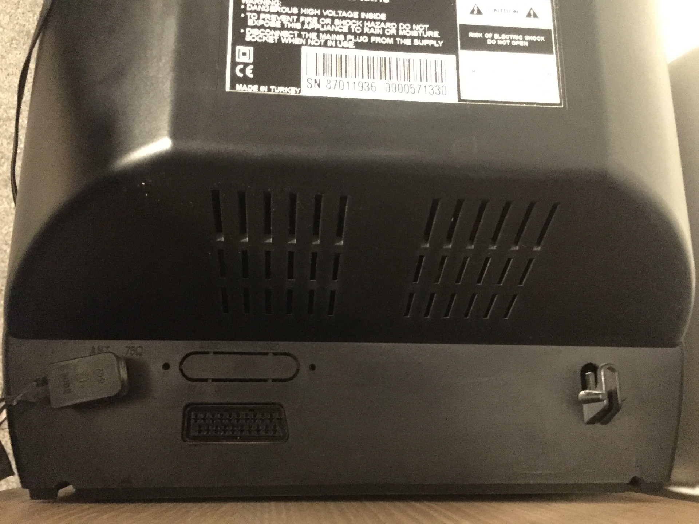
I had a few options that I explored before committing to this project but ran into brick walls with each one.
I have a soft-modded PlayStation 2 already wired into the TV, and the homebrew scene has produced a couple of SNES emulators for the console. Each however suffered very poor frame rates for Earthbound so this was a non-starter.
I then bought a cheap HDMI to composite adapter with the hopes of hooking something up with more oomph, maybe even a fully fledged computer. However despite advertising PAL support on the listing, the device only supported a subset of PAL formats and was incompatible with the CRT TV, displaying images in distorted black and white.
I finally decided I could make something better myself.
Table of Contents
Build Requirements
If I was going to build something I not only wanted it to work well, I wanted it to look cool too. I had a peek around thingiverse for some inspiration and stumbled upon a project that consisted of a custom base for an original NES controller that can house a Raspberry Pi Zero. Not only does it look cool but the NES buttons can actually be wired to the Pi, letting it double as a console and a controller!
So we are going to use this as a starting point but add some of our own build requirements:
- Wire the NES buttons up to the Pi so it can be used as a controller
- Use a NES button combination to power toggle the console
- Add composite video and audio to the Pi
- Add a power indicator LED
The final 3d model we end up using for a base is available on thingiverse as a remix of the original.
Parts List
| Part | Amount |
|---|---|
| Raspberry Pi Zero W | x1 |
| Raspberry Pi (Any model) | x1 |
| ATtiny45 Microcontroller | x1 |
| NES-004 Controller | x1 |
| MicroSD Card (8GB+) | x1 |
| Strip Board | x3 |
| 4 Pole Jack to RCA Cable | x1 |
| Micro USB cable | x1 |
| M3 x 5mm mounting screws | x4 |
| 5mm Red LED | x1 |
| TRRS Breakout Board | x1 |
| 270Ω Resistor | x3 |
| 150Ω Resistor | x2 |
| 22nF Capacitor | x2 |
| 10uF Capacitor | x2 |
| 3d Printer or Printing Service | x1 |
| Wire (22AWG Single Core ) | x1 roll |
| Soldering Iron | x1 |
| Solder | x1 roll |
Wiretapping the NES controller
We want to be able to use the controller functionally but also read a button combination from it to toggle the Raspberry Pi Zero’s power state.
To understand if this is even possible we first need to understand two things a little better:
- Raspberry Pi Zero power options
- NES Controller functionality
Raspberry Pi Zero Power Options
Raspberry Pi makes use of a feature called device tree overlays. Among other things it allows for kernel modules to be enabled / disabled at boot time. Raspberry Pi devices come by default with a plethora of built in dtoverlays that can be used to modify behaviour at boot.
The documentation for the overlays can be found on your Raspberry Pi device under /boot/overlay/README, or over on the Raspberry Pi firmware github page . One such overlay stands out as a very good candidate for achieving the power control we want:
README
Name: gpio-shutdown
Info: Initiates a shutdown when GPIO pin changes. The given GPIO pin
is configured as an input key that generates KEY_POWER events.
...
This overlay only handles shutdown. After shutdown, the system
can be powered up again by driving GPIO3 low. The default
configuration uses GPIO3 with a pullup, so if you connect a
button between GPIO3 and GND (pin 5 and 6 on the 40-pin header),
you get a shutdown and power-up button. Please note that
Raspberry Pi 1 Model B rev 1 uses GPIO1 instead of GPIO3.
Load: dtoverlay=gpio-shutdown,<param>=<val>
Params: gpio_pin GPIO pin to trigger on (default 3)
For Raspberry Pi 1 Model B rev 1 set this
explicitly to value 1, e.g.:
dtoverlay=gpio-shutdown,gpio_pin=1
active_low When this is 1 (active low), a falling
edge generates a key down event and a
rising edge generates a key up event.
When this is 0 (active high), this is
reversed. The default is 1 (active low).
gpio_pull Desired pull-up/down state (off, down, up)
Default is "up".
Note that the default pin (GPIO3) has an
external pullup. Same applies for GPIO1
on Raspberry Pi 1 Model B rev 1.
debounce Specify the debounce interval in milliseconds
(default 100)
The default configuration uses GPIO3 with a pullup, so if you connect a button between GPIO3 and GND, you get a shutdown and power-up button
This sounds like the exact behaviour we are looking for. Pull GPIO3 low and we get a power toggle pin.
We will enable this dtoverlay later on in the Software Setup section. Since we now know the Pi is willing to play ball lets take a deeper dive in to how the NES controller works.
How NES Controllers Work
NES Controller’s are surprisingly simple. They consist of a single 4021 8-bit shift register. This little IC reads 8 separate inputs and can output them serially over a single pin. You can see from this diagram that each parallel input pin (P1-8) is wired to a button on the controller:

The other pins of note here are CK P/S, DS and O8.
| Name | Description |
|---|---|
CK |
Clock pin |
P/S |
Parallel or Serial select pin |
O8 |
Serial Output |
DS |
Serial input, tied LOW |
When the Console want’s to know which buttons are are being pressed, it will do the following:
- Set
P/SLOW, we are now in Parallel in, serial out mode. On each clock pulse, the 4021 will capture the state of the 8 connected buttons in parallel - Send 1 clock pulse on the
CKpin. - Set
P/SHIGH, we are now in serial in, parallel out mode. On each clock pulse, the 4021 will read a new value in fromDSand shift all registers to the right - Loop 8 times:
- Read the value of
O8 - Send 1 clock pulse on the
CKpin. The next value becomes available onO8
- Read the value of
By stepping through this process, the Console can extract each button’s state from the NES controller using only 3 wires.
RetroPie actually has a driver that does this for us, driver setup is covered in the Software Setup section. We can wire the NES controller directly on to our GPIO to make use of this driver, so lets do that.
NES-004 Circuit Diagram
Wire coloring can vary between controllers and I would highly recommend double checking wire / pin mappings with a multimeter.
| 4021 pin | Wire Color | Raspberry Pi | |
|---|---|---|---|
| 3v3 | Green or White | 3v3 | |
| O8 | Yellow | GPIO 4 | |
| CK | Red | GPIO10 | |
| P/S | Orange | GPIO12 | |
| GND | Brown | GND | |
|
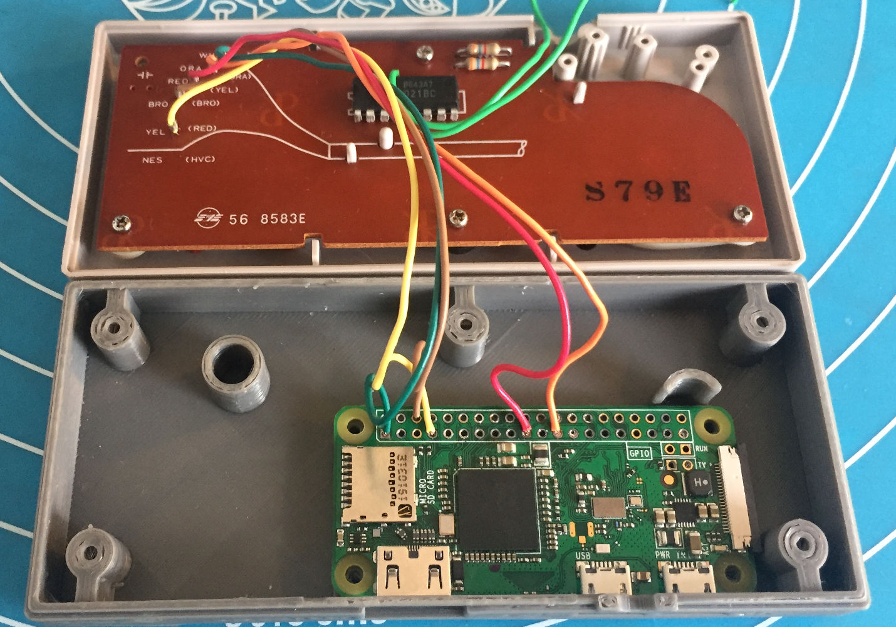 |
|
||
Using An ATtiny To Bridge The Gap

We need a man in the middle to be able to drive GPIO 3 LOW when certain buttons are pressed on the NES Controller. This is because the Pi cannot do the work for us when it is powered off. For this project I decided to use an AATiny45 microcontroller for the job since I had a few lying around.
One problem we need to address is that two devices cannot interface with the 8 bit shift register at the same time without interfering with each other, Both CK and P/S need a single controller to be deterministic. However, each of the 8 NES buttons has its own dedicated connection pin on P1-8. So all we need to do is decide on a combination now and ‘wiretap’ connections from those pins to our ATtiny as inputs.
We can prove this works by providing power to the 8-bit shift register and checking for a voltage shift on one of the 8 ‘Parallel In’ pins, lets use P8. P8's voltage level shifts when we press the A button:


Pressing the
Abutton pulls the voltage LOW, returning to HIGH when released
Looking good. I opted to use buttons start + select as my combination.
Let’s get a breadboard set up and start trying to implement this. My NES controller has a CD4021BC IC, below is the pinout for this IC and the ATtiny45:
|
|
Comparing the Parallel In pins with the nes004 diagram
, we have enough information to wire this up now:

|

|
|
| 4021 | Attiny45 |
|
|---|---|---|
| P6 (select) | PB1 | |
| P5 (start) | PB2 | |
| 3v3 | 3v3 | |
| GND | GND | |
Now that we have our hardware setup we need to start writing some software. All Raspberry Pi’s come with on-board SPI and we can leverage this to write directly to our ATTIny45 using AVRDude.
AVRDude Setup
To make this a little easier you can build up a very simple breadboard circuit for seating your ATtiny when you want to flash to it.
Resistors aren’t required if you are using the 3v3 pin to power the ATtiny
|
|
|

Login to your Raspberry Pi of choice and do the following steps.
Install dependencies:
sudo apt update && sudo apt upgrade -y
sudo apt install bison automake autoconf flex gcc-avr binutils-avr avr-libc -y
Clone a copy of AVRDude from github:
git clone https://github.com/kcuzner/avrdude
cd to the directory and compile AVRDude, go get a coffee because this step will take a while:
cd avrdude/avrdude
./bootstrap
./configure
sudo make install
Now lets test the connection, connect your ATtiny up to the SPI pins on your Raspberry Pi and run the following:
sudo avrdude -p t45 -c linuxspi -P /dev/spidev0.0 -b 10000
Output
pi@raspberrypi:~ $ sudo avrdude -p t45 -c linuxspi -P /dev/spidev0.0 -b 10000
avrdude: AVR device initialized and ready to accept instructions
Reading | ################################################## | 100% 0.01s
avrdude: Device signature = 0x1e9206
avrdude: safemode: Fuses OK (E:FF, H:DF, L:62)
avrdude done. Thank you.
pi@raspberrypi:~ $
If you get a similar output then your Pi can now communicate with the ATtiny!
You can see the fuse settings listed in the output. The ATtiny45 usually comes with these values as defaults and looking specifically at the LOW fuse setting, 0x62 means Use the internal 8Mhz RC clock source and divide by 8.
So out of the box the ATtiny is only clocked at 1Mhz. We can change this to use the 16Mhz PLL clock by modifying the LOW fuse to a value of 0xF1. There is a great online calculator
that is useful for understanding the fuses in more detail.
Please note that modifying fuse values is a potentially dangerous activity, please make sure you understand the fuse values you are modifying before running the command
Let’s change the LOW fuse to use a 16MHz clock, our code will be designed with the 16Mhz clock speed in mind:
sudo avrdude -p t45 -c linuxspi -P /dev/spidev0.0 -b 10000 -U lfuse:w:0xf1:m
Output
pi@raspberrypi:~ $ sudo avrdude -p t45 -c linuxspi -P /dev/spidev0.0 -b 10000 -U lfuse:w:0xf1:m
avrdude: AVR device initialized and ready to accept instructions
Reading | ################################################## | 100% 0.01s
avrdude: Device signature = 0x1e9206
avrdude: reading input file "0xf1"
avrdude: writing lfuse (1 bytes):
Writing | ################################################## | 100% 0.02s
avrdude: 1 bytes of lfuse written
avrdude: verifying lfuse memory against 0xf1:
avrdude: load data lfuse data from input file 0xf1:
avrdude: input file 0xf1 contains 1 bytes
avrdude: reading on-chip lfuse data:
Reading | ################################################## | 100% 0.00s
avrdude: verifying ...
avrdude: 1 bytes of lfuse verified
avrdude: safemode: Fuses OK (E:FF, H:DF, L:F1)
avrdude done. Thank you.
pi@raspberrypi:~ $
Great, you can see the fuse value has now changed. We should be running at 16Mhz now when it comes to runtime.
The code that I eventually used in this project is available here .
It uses the Interrupt and Timer features of the ATtiny45 to essentially say:
while True:
if IN_PIN_1 == 0 and IN_PIN_2 == 0:
sleep(1.2)
if IN_PIN_1 == 0 and IN_PIN_2 == 0:
OUT_PIN = 0
else:
OUT_PIN = 1
else:
OUT_PIN = 1
You can compile this code and push it to your ATtiny by running the following commands:
avr-gcc main.c -mmcu=attiny45 -Os -o main.bin
avr-objcopy -O ihex main.bin main.hex
sudo avrdude -p t45 -c linuxspi -P /dev/spidev0.0 -b 10000 -U flash:w:main.hex
Output
pi@raspberrypi:~/attiny$ avr-gcc main.c -mmcu=attiny45 -Os -S -o main.S
pi@raspberrypi:~/attiny$ avr-objcopy -O ihex main.bin main.hex
pi@raspberrypi:~/attiny$ sudo avrdude -p t45 -c linuxspi -P /dev/spidev0.0 -b 1
0000 -U flash:w:main.hex
avrdude: AVR device initialized and ready to accept instructions
Reading | ################################################## | 100% 0.01s
avrdude: Device signature = 0x1e9206
avrdude: NOTE: "flash" memory has been specified, an erase cycle will be performed
To disable this feature, specify the -D option.
avrdude: erasing chip
avrdude: reading input file "main.hex"
avrdude: input file main.hex auto detected as Intel Hex
avrdude: writing flash (230 bytes):
Writing | ################################################## | 100% 0.98s
avrdude: 230 bytes of flash written
avrdude: verifying flash memory against main.hex:
avrdude: load data flash data from input file main.hex:
avrdude: input file main.hex auto detected as Intel Hex
avrdude: input file main.hex contains 230 bytes
avrdude: reading on-chip flash data:
Reading | ################################################## | 100% 1.79s
avrdude: verifying ...
avrdude: 230 bytes of flash verified
avrdude: safemode: Fuses OK (E:FF, H:DF, L:F1)
avrdude done. Thank you.
pi@raspberrypi:~/attiny$
We can now test the chip in on our breadboard:

And finally solder the ATtiny onto some strip board, the module itself will be seated between two pillars in the case bottom:

This equated to a stripboard piece with 11 x 6 holes for me. You can sand down the edges to fine tune the size so it fits in the cavity. The design for the board itself is very simple you just need to isolate the adjacent pins from each other by placing some holes in the center.
ATtiny Circuit Diagram
4021
.-+ +-. 3v3 .---------------.
-+ '-' +-----' ATtiny45 |
-+ +- .---------. |
-+ P6 +---. -+ PB0 GND +--. |
-+ P5 +--.'--+ PB1 PB4 +- | +---. .--------.
-+ +- '---+ PB2 PB3 +--)-)--.'-+ 3v3 |
-+ +- .-+ 3v3 RST +- | | '--+ GPIO 3 |
-+ +- | | .-. | | | .---+ GND |
.-+ GND +- | '--+ +--' | | | '--------'
| '-------' '--------------)-' | Rasp Pi
+-----------------------------'---'
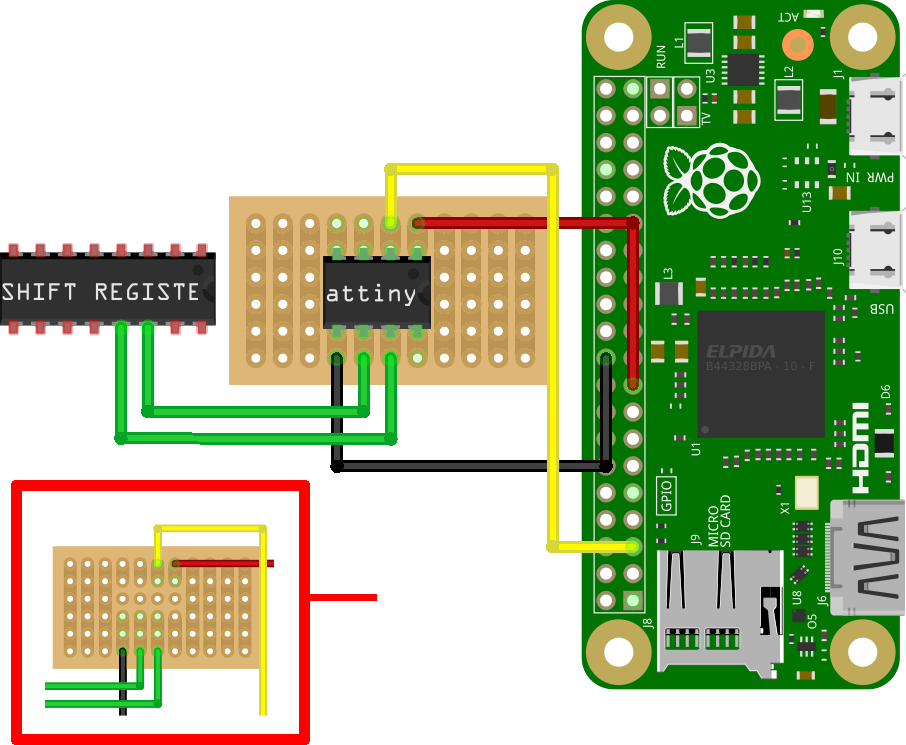
Hack The Jack Back
Most full sized Raspberry Pi models have an on-board 4 pole TRRS phono jack that consists of 2 audio channels and a composite video channel. However to conserve space on the Zero, most I/O ports have either been minimized or removed completely:

Not all hope is lost however. The composite pin is still exposed as the TV header on the board:
))
And as it turns out we can actually just re-purpose two PWM pins from the main 40 pin GPIO block. As of Raspbian Buster (10), the standard way of doing this is by using a dtoverlay called audremap. This overlay allows you to choose a pin set to remap and will make an audio device available at runtime using these pins.
README
Name: audremap
Info: Switches PWM sound output to GPIOs on the 40-pin header
Load: dtoverlay=audremap,<param>=<val>
Params: swap_lr Reverse the channel allocation, which will also
swap the audio jack outputs (default off)
enable_jack Don't switch off the audio jack output
(default off)
pins_12_13 Select GPIOs 12 & 13 (default)
pins_18_19 Select GPIOs 18 & 19
There is a catch however. The TRRS jack of a fully fledged Raspberry Pi has a low pass filter circuit that reduces noise on each audio channel. This is something that is missing on the raw PWM pins and we are going to have to add it back to get the crisp audio we are seeking.
What is a low pass filter?
A low pass filter is a circuit that essentially places an upper bound on the output frequency of a signal. In respect to our audio channels, this means we can eliminate high frequency noise that might interfere with our signal. We know that the ‘good’ part of the signal is going to be within the human hearing range (20hz - 20,000hz), so we can design a circuit with a cut off frequency close to 20,000hz.
To understand how this kind of circuit works it can be useful to see it in action. Let’s look at a simple low-pass filter circuit with a 270Ω resistor and a 22uF capacitor and see what happens to the output signal (green) when we increase the frequency of the input signal (red).

The cut-off frequency for this circuit is 26.79Hz. This can be calculated with the following formula:
$$f = {1 / 2\Pi rc}$$
Substituting our values:
$${ r} = 270Ω$$
$${ c} = 22\mathrm{e}{-6}F$$
$$f = {1 / 2 * \Pi * 270 * 22\mathrm{e}{-6}}$$
$$f = 26.793761463282046$$
You can see in the above GIF that there is a phase shift occurring between the output and the input. The output voltage takes some time before it reflects the input voltage. This is caused by the capacitor charging and discharging at a specific rate. At 10Hz we are below the cut-off frequency and the output is able to reflect the input voltage in time before the next signal edge. However what happens when we approach the cut-off frequency (26Hz) and then move beyond to 100Hz?
|
|
|


The signal starts to attenuate (weaken) as we move beyond the cut-off frequency and that is the trick to the low-pass filter. If the frequency of the input signal at a given point in time is too fast for the capacitor to keep up, that part of the signal is essentially eliminated. If we take this demo circuit and now change the value of the 22uF capacitor to 22nF we get a cut-off frequency of 26,793.76Hz which is close enough to the upper human hearing range for our purposes:
$$f = {1 / 2 * \Pi * 270 * 22\mathrm{e}{-9}}$$
$$f = 26,793.761463282048$$
You can also use a 10nf or 33nf capacitor instead of the 22nf
There are a few additional complications that we must solve for in our circuit. The output voltage of our PWM pins is 3.3v. The standard audio line-level in consumer products has a peak voltage of around 1.5v so we need to reduce our PWM signal down to this level to be within spec. We can create a voltage divider to achieve this and it only requires one additional resistor.
We should also place a DC filter capacitor just before our output, this only permits AC and stops DC voltage from making its way to our speakers.
This is our final circuit:
|
The 270Ω resistor is ‘re-used’ in our circuit as one half of the voltage divider. The 150Ω resistor makes up the second part and together they reduce the voltage to approx 1.18v at the point that they meet. This can be calculated using the voltage divider formula:
$$V_{out} = \frac{R_b}{R_a+R_b} \times V_{in}$$
Substituting our values:
$${R_a} = 270Ω$$
$${R_b} = 150Ω$$
$$V_{in} = 3.3V$$
$$V_{out} = \frac{150}{270+150} \times 3.3$$
$$V_{out} = 1.1785714285714286V$$
We need two copies of this circuit in our final board design, one for each audio channel. The resultant stripboard is placed to the left of the Pi in the case and looks like this:
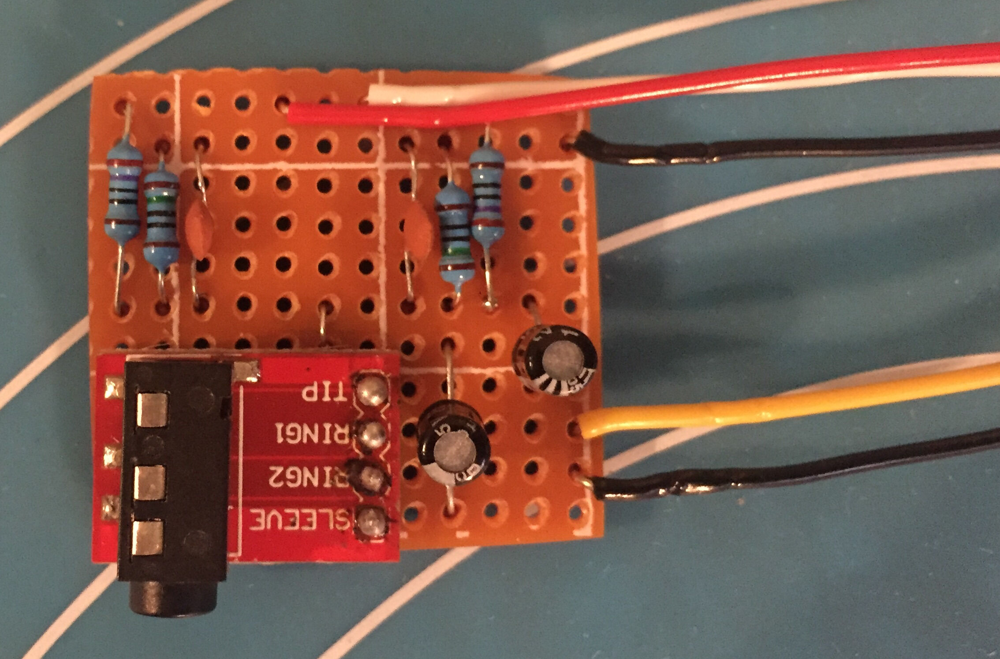

My stripboard piece ended up being 11 x 12 holes across. As with our previous circuit, you can sand down the edges to fine tune the size so it fits in the cavity.
Phono Jack Circuit Diagram
|
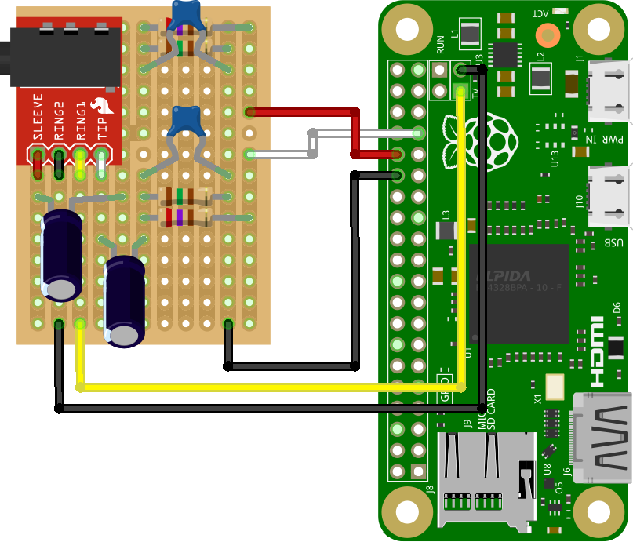
Indicator LED
The indicator LED is simply an LED with a 270Ω resistor soldered onto one leg:
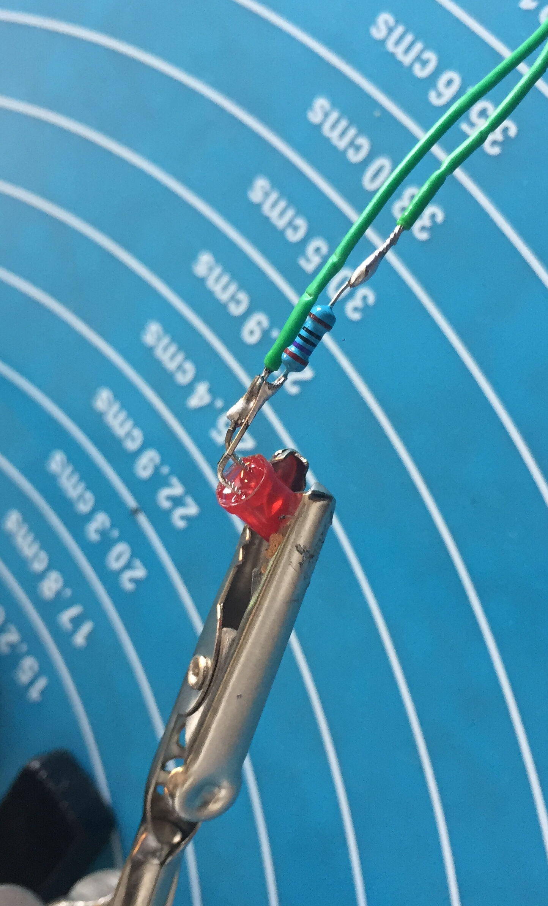 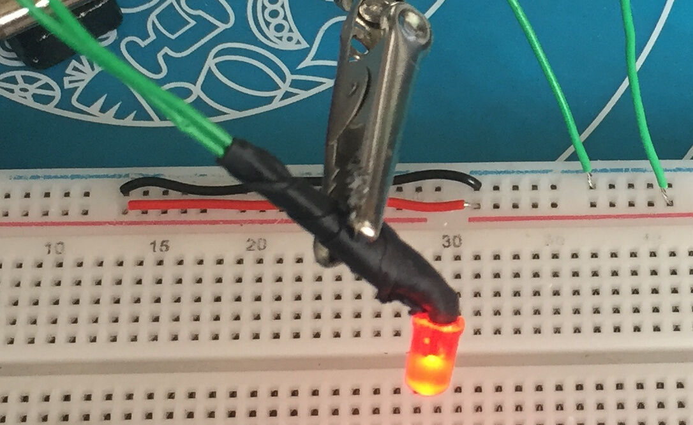 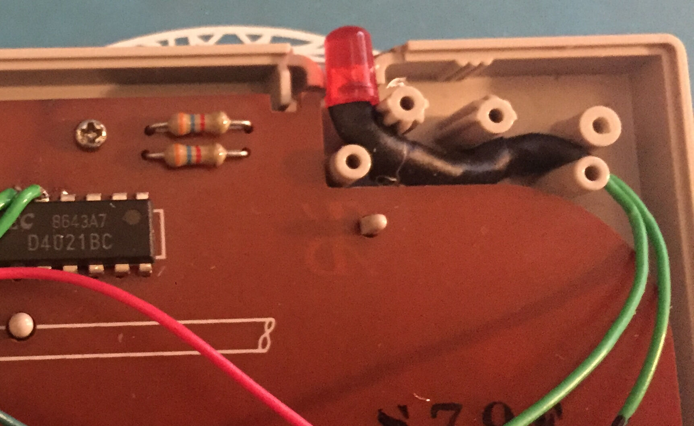
We want to be able to indicate the power state shortly after powering on the device. Luckily for us the serial communication pins are configured as outputs very early on in the boot process. So by enabling serial communication (see Software Setup ) we can get a quick and dirty power indication pin on GPIO14 (UART TX).
LED Circuit Diagram
|
|
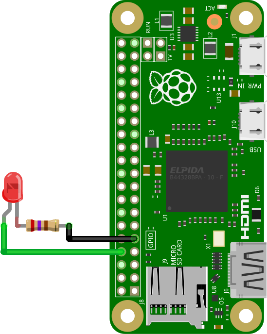 |
Software Setup
Grab a copy of RetroPie:
wget -O - https://github.com/RetroPie/RetroPie-Setup/releases/download/4.8/retropie-buster-4.8-rpi1_zero.img.gz | gzip -d > retropie.img
Insert your SD Card into the computer and locate its device name:
sudo fdisk -l
Output
❯ sudo fdisk -l
...
Disk /dev/sdi: 29.74 GiB, 31914983424 bytes, 62333952 sectors
Disk model: USB3.0 CRW -SD
Units: sectors of 1 * 512 = 512 bytes
Sector size (logical/physical): 512 bytes / 512 bytes
I/O size (minimum/optimal): 512 bytes / 512 bytes
Disklabel type: dos
Disk identifier: 0x00000000
Device Boot Start End Sectors Size Id Type
/dev/sdi1 8192 62333951 62325760 29.7G c W95 FAT32 (LBA)
Write retropie.img to disk, replacing sdx with your disk name:
sudo dd if=retropie.img of=/dev/sdx bs=4M conv=fsync status=progress
There should be two new mount points available after this command completes:
df -h /dev/sdx*
Output
❯ df -h /dev/sdi*
Filesystem Size Used Avail Use% Mounted on
udev 16G 0 16G 0% /dev
/dev/sdi1 256M 49M 207M 20% /media/kennedn/boot
/dev/sdi2 2.5G 2.5G 0 100% /media/kennedn/retropie
cd to your boot partition to continue with setup:
cd /media/kennedn/boot
config.txt
Uncomment sdtv_mode in config.txt to enable composite video:
# uncomment for composite PAL
sdtv_mode=2
Add a dtoverlay line to config.txt to configure gpio-shutdown, this will enable GPIO3 as a power toggle pin:
dtoverlay=gpio-shutdown
Add a dtoverlay line to config.txt to configure audremap, this will re-route audio to PWM pins 12 and 13. In my config I swap the left and right channels with swap_lr to compensate for how I have wired the TRRS module to the board:
dtoverlay=audremap,pins_12_13,swap_lr
Add an enable_uart line to config.txt to enable the tx and rx GPIO pins for our indicator LED:
enable_uart=1
Full config.txt
# For more options and information see
# http://rpf.io/configtxt
# Some settings may impact device functionality. See link above for details
# uncomment if you get no picture on HDMI for a default "safe" mode
#hdmi_safe=1
# uncomment this if your display has a black border of unused pixels visible
# and your display can output without overscan
#disable_overscan=1
# uncomment the following to adjust overscan. Use positive numbers if console
# goes off screen, and negative if there is too much border
#overscan_left=16
#overscan_right=16
#overscan_top=16
#overscan_bottom=16
# uncomment to force a console size. By default it will be display's size minus
# overscan.
#framebuffer_width=1280
#framebuffer_height=720
# uncomment if hdmi display is not detected and composite is being output
#hdmi_force_hotplug=1
# uncomment to force a specific HDMI mode (this will force VGA)
#hdmi_group=1
#hdmi_mode=1
# uncomment to force a HDMI mode rather than DVI. This can make audio work in
# DMT (computer monitor) modes
#hdmi_drive=2
# uncomment to increase signal to HDMI, if you have interference, blanking, or
# no display
#config_hdmi_boost=4
# uncomment for composite PAL
sdtv_mode=2
#uncomment to overclock the arm. 700 MHz is the default.
#arm_freq=800
# Uncomment some or all of these to enable the optional hardware interfaces
#dtparam=i2c_arm=on
#dtparam=i2s=on
#dtparam=spi=on
# Uncomment this to enable infrared communication.
#dtoverlay=gpio-ir,gpio_pin=17
#dtoverlay=gpio-ir-tx,gpio_pin=18
dtoverlay=gpio-shutdown
dtoverlay=audremap,pins_12_13,swap_lr
# Additional overlays and parameters are documented /boot/overlays/README
# Enable audio (loads snd_bcm2835)
dtparam=audio=on
enable_uart=1
[pi4]
# Enable DRM VC4 V3D driver on top of the dispmanx display stack
dtoverlay=vc4-fkms-v3d
max_framebuffers=2
[all]
#dtoverlay=vc4-fkms-v3d
gpu_mem_256=128
gpu_mem_512=256
gpu_mem_1024=256
overscan_scale=1
Network setup
Enable ssh by creating a blank file called ssh:
touch ssh
Create and fill out a file called wpa_supplicant.conf, replacing NETWORK-NAME and NETWORK-PASSWORD with your own values:
country=GB
ctrl_interface=DIR=/var/run/wpa_supplicant GROUP=netdev
update_config=1
network={
ssid="NETWORK-NAME"
psk="NETWORK-PASSWORD"
}
Controller setup
We need to boot into RetroPie for the remaining steps. We can ssh directly on to the device headlessly if the IP address is known, otherwise you may need to plug in a monitor and keyboard, you can press F4 when using a physical keyboard to drop into a tty shell.
SSH onto the NESZero:
ssh pi@192.168.1.112
Run the RetroPie-Setup script as root:
sudo RetroPie-Setup/retropie_setup.sh
You will be presented with a menu system, Select Manage packages:
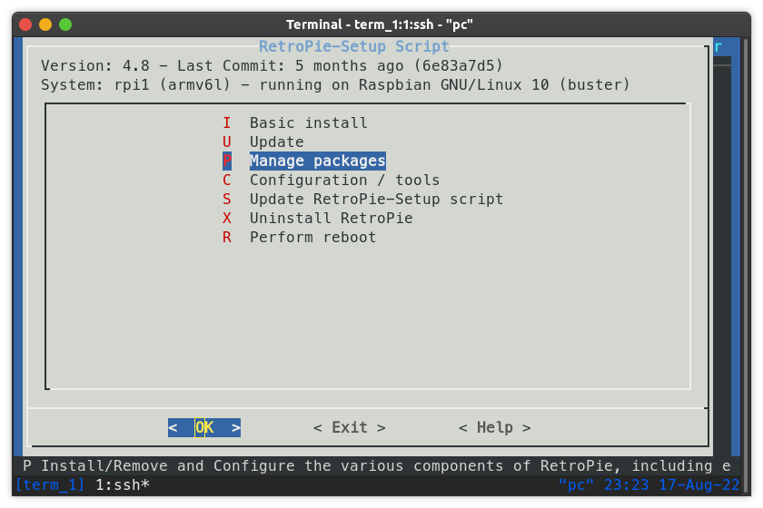
On the next menu select driver:
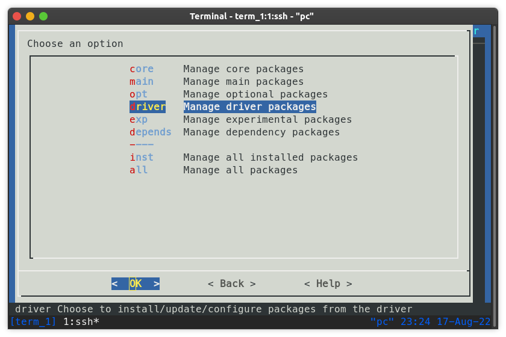
On the next menu select gamecondriver:
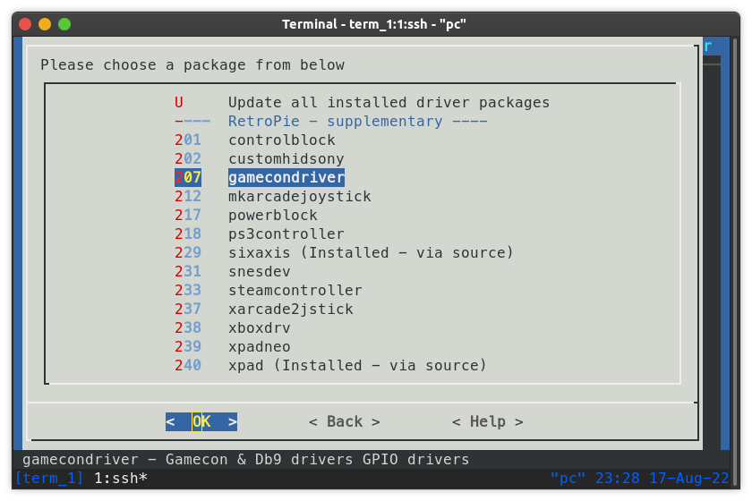
On the next menu select Install from pre-compiled binary:
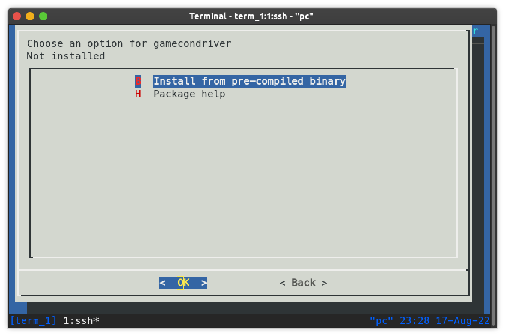
Once completed, you can hit back a few times and then exit. We can then re-start emulationstation and map our buttons for the nes controller:
emulationstation
Over in emulation station, you will need to plug in another controller or a keyboard to the usb slot.
Press backspace to bring up the main menu, move down to CONFIGURE INPUT with the arrow keys:
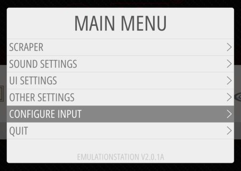
and hit z twice to enter the Configure Input Menu:
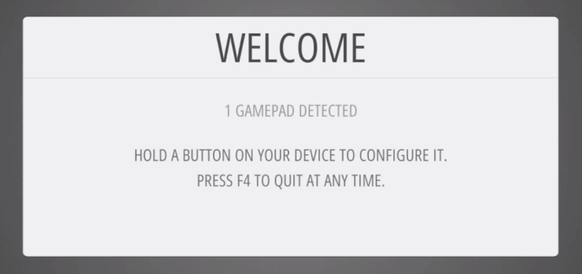
You can then move through the prompts to configure the NES Controller as an input device.
Finish
If you made it all the way through then congratulations! You can finally kick back, relax and play some Earthbound on your CRT TV: